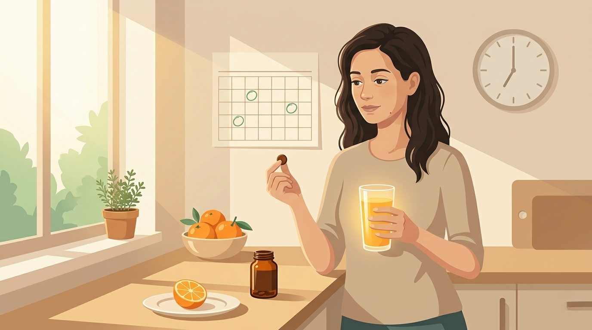

By Rustam Iuldashov
30 years lived experience with chronic migraine | Sources: 16 peer-reviewed references including The Lancet Haematology (n=9,355 NHANES), Pain Medicine (n=226 case-control), Neurology (n=137 MRI study), The Lancet Haematology (2 RCTs on iron dosing) | Last updated: May 24, 2026
Medical Review: This content is based on peer-reviewed research from The New England Journal of Medicine, The Lancet Haematology, Nature Communications, Neurology, Pain Medicine, Cephalalgia, Headache, Frontiers in Nutrition, Blood, the American Journal of Clinical Nutrition, and the Journal of Clinical Sleep Medicine.
Important Notice: This article is for informational purposes only and does not replace professional medical advice. The author is not a licensed physician or healthcare professional. Always consult your doctor before starting iron supplementation or making changes based on this content.
Key Takeaways
- A “normal” ferritin result does not mean your iron stores are sufficient. Standard lower limits (often 12–15 ng/mL for women) come from population averages, not symptom thresholds[7]
- Iron is a required cofactor for the enzyme that makes dopamine — the same neurotransmitter system implicated in migraine. Low iron means impaired dopamine signaling, which can lower the threshold for attacks[2, 3]
- The body itself starts compensating for low iron near 50 ng/mL. Neurological guidelines for related disorders treat ferritin at or below 75 ng/mL as deficient[8, 9]
- Demand a full iron panel — ferritin, serum iron, TIBC, and transferrin saturation — not just hemoglobin. Add CRP if inflammation is possible[11]
- If supplementing, take iron every other day in a single morning dose with vitamin C, away from coffee, tea, and calcium. Recheck ferritin at 8 to 12 weeks[14, 15]
- People with migraine have a documented higher rate of iron deficiency anemia — 21.7% versus 12.9% in controls in one case-control study[4]
- End-menstrual migraine is a distinct subtype driven by post-bleeding iron drop, not estrogen withdrawal — and it responds to iron repletion[10]
Your bloodwork came back clean. No asterisks. No flags. Hemoglobin: fine. Ferritin: 22 ng/mL. The portal note reads “within normal limits.” And yet your migraines keep coming, the fatigue keeps winning, and something in this picture is wrong.
That something is the gap between what laboratories call normal and what your brain calls enough. The lower bound of the ferritin reference range — often as low as 12 ng/mL for women — was never built as a health threshold. It was built as a statistical average, drawn from a population that was already iron-depleted to begin with. For migraine, that statistical sleight of hand may be costing you attacks every single month.
Hemoglobin Is the Headline. Ferritin Is the Story.
Hemoglobin tells you what’s circulating in your blood right now. Ferritin tells you what’s in the vault. You can run a perfectly normal hemoglobin while your stored iron drains quietly for years — especially if you menstruate or eat lightly of red meat.[1] By the time hemoglobin finally dips, ferritin has usually been near empty for a long time. And your brain has been operating in deficit the whole way down.
That deficit matters, because iron is not a passive backup mineral. It sits inside the enzymes that build the neurotransmitters your pain system runs on.
Your Migraine Brain Runs on Dopamine. Dopamine Runs on Iron.
The rate-limiting enzyme in dopamine production is called tyrosine hydroxylase. It cannot function without an iron ion in its active site.[2] No iron, no enzyme. No enzyme, no dopamine. And dopamine sits at the center of migraine biology — the prodrome, the nausea, the yawning, the light sensitivity, the threshold at which an attack ignites.[3]
This is why studies keep finding the same fingerprint. A 2016 case-control study in Pain Medicine found iron-deficiency anemia in 21.7% of migraine patients versus 12.9% of controls, with the gap driven almost entirely by women.[4] An NHANES analysis of 7,880 American adults found that women aged 20 to 50 with low dietary iron were significantly more likely to report severe headache or migraine; in women over 50, the same pattern showed up directly in serum ferritin.[5] A 2024 systematic review concluded the relationship is consistent and inverse: as ferritin falls, migraine severity climbs.[6]
The same biochemistry: Tyrosine hydroxylase — the enzyme that builds dopamine — requires iron as a non-negotiable cofactor. Empty your storage iron, and you are functionally lowering the substrate supply for one of the most pain-relevant neurotransmitters in your brain. The deficiency isn’t hypothetical. It’s structural.[2, 3]
The Threshold the Lab Doesn’t Mention
Look at the lower limit of your lab’s ferritin range. For women, it usually starts somewhere between 12 and 15 ng/mL. That number is a population average — not a symptom threshold.[7]
Two other numbers tell a different story.
The first is the body itself. Your physiology starts ramping up iron absorption when ferritin drops below roughly 50 ng/mL — the point at which your own systems recognize a deficit and try to compensate.[8] The second is the medical literature on a related disorder. The 2025 American Academy of Sleep Medicine guidelines for Restless Legs Syndrome — a condition driven by the same iron-dopamine pathway — recommend iron supplementation when ferritin is at or below 75 ng/mL.[9] The threshold for “enough iron for a healthy brain” is not 12. It is closer to 50, and likely higher.
Three thresholds, three different stories:
— 12–15 ng/mL: The standard lab lower limit for women. A statistical floor, not a clinical target.[7]
— ~50 ng/mL: The point at which the body itself starts ramping up iron absorption — meaning your physiology already recognizes a deficit.[8]
— ≤75 ng/mL: The 2025 AASM clinical threshold for iron supplementation in Restless Legs Syndrome — a related iron-dopamine disorder.[9]
Anne Calhoun and her colleagues at the Carolina Headache Institute described a migraine subtype that traces this exactly. They called it end-menstrual migraine: a predictable headache that arrives not before a period, when estrogen drops, but at the tail end of bleeding, days after hormones have already stabilized.[10] In their clinic, 35.3% of women evaluated for menstrual-related migraine had this pattern. Most had low ferritin. The trigger was not hormonal. It was blood loss — a brief relative anemia — and iron repaired them.
The Bloodwork to Actually Demand
A complete blood count alone will miss all of this. To see what’s really happening, you need a full iron panel — four numbers, not one:
— Serum ferritin. Your storage iron. The single most useful number.
— Serum iron. The iron circulating right now. Variable; weak in isolation.
— Total iron-binding capacity (TIBC). How much capacity your transport protein has. Rises when stores fall.
— Transferrin saturation (TSAT). The percentage of that transport protein actually carrying iron. Below 20% suggests deficiency, even when ferritin looks borderline.[11]
If you have any reason to suspect inflammation — infection, autoimmune disease, chronic illness — also ask for C-reactive protein (CRP). Ferritin is what hematologists call an acute-phase reactant: inflammation can lift it into the “normal” zone while your true stores remain empty. A normal ferritin with a high CRP does not rule out iron deficiency.[7]
Ask for the panel. If your doctor orders only hemoglobin and calls it iron testing, you are looking at a thumbnail of the wrong picture.
A Note on the Brain-Iron Paradox
Here is something strange that imaging studies have been documenting for over a decade. People with chronic migraine show increased iron deposition in the periaqueductal gray and red nucleus — pain-modulating regions deep in the brainstem.[12] So how can someone have empty storage iron in their body and elevated iron in their brain?
The answer is that these are not the same iron. The brainstem iron appears to be local damage — free iron released by oxidative stress during repeated attacks, settling into tissue where it doesn’t belong. It is a marker of chronicity, not a sign of plenty. More iron in the periaqueductal gray actually predicts a poorer response to preventive treatment.[13] Fixing systemic iron deficiency does not flood the brain. It restores the substrate your dopamine pathway needs.
If You’re Low, Repair Smartly
Three principles matter more than the brand on the bottle.
First, dosing frequency. A landmark study by Moretti and colleagues showed that taking iron every other day, in a single morning dose, results in higher total absorption than taking it daily.[14] A dose of iron triggers a 24-hour spike in hepcidin, a hormone that slams the absorption door shut. Daily dosing fights your own physiology. Alternate-day dosing works with it.
Second, what you take it with. Vitamin C dramatically boosts the absorption of non-heme iron — a glass of orange juice or a vitamin C tablet alongside your supplement can multiply uptake several-fold.[15] Coffee, tea, calcium, and dairy do the opposite and should be separated by at least an hour or two.
Third, timeline. Energy and headache frequency can improve in two to four weeks, but rebuilding stores takes three to six months.[15] Recheck ferritin at 8 to 12 weeks. The target is not 12. The target is at least 50, and ideally higher. (For a broader look at what else your migraine brain may be missing — magnesium, riboflavin, CoQ10 — iron is one essential nutrient among several with peer-reviewed evidence behind them.)
The Iron Repair Protocol
Single morning dose, every other day. This outperforms daily dosing because each dose triggers a 24-hour hepcidin spike that blocks absorption of the next dose.[14]
The Vitamin C Pairing
Take iron with a source of vitamin C — orange juice, a vitamin C tablet, or kiwi. Avoid coffee, tea, calcium supplements, and dairy within one to two hours of the iron dose.[15]
The Recheck Schedule
Rebuilding stores takes three to six months. Recheck ferritin at 8 to 12 weeks. Symptoms may improve sooner than the lab number does, which is normal — subjective recovery and storage recovery move at different speeds.[15]

When Iron Is Not the Answer
Two cautions.
Do not supplement blindly. People with hemochromatosis — a genetic condition affecting roughly 1 in 200 of those with Northern European ancestry — already store too much iron and can be harmed by more.[16] And very heavy menstrual bleeding is itself a treatable condition. If you soak through protection in under two hours, pass large clots, or feel wiped out every cycle, the bleeding is the upstream problem and deserves its own evaluation.
⚠️ When to Seek Urgent Medical Care
Iron deficiency develops slowly, but several warning signs need same-day evaluation, not a routine follow-up:
— A sudden, severe headache unlike your usual migraine pattern — sometimes called a “thunderclap” headache
— Extreme fatigue combined with shortness of breath at rest, racing heart, or dizziness when standing
— Pale skin, pale gums, or a noticeably faster pulse with everyday activity
— Menstrual bleeding that soaks through a pad or tampon every hour for several consecutive hours, or passing clots larger than a quarter
— Black, tarry, or blood-streaked stools — possible signs of gastrointestinal bleeding
— Chest pain or fainting episodes
These can signal severe anemia or active blood loss. Call your doctor the same day, or seek emergency care if symptoms are severe or progressing.
But for the millions of people whose ferritin reads “normal” at 18 or 22 or 28 ng/mL while their migraines and their fatigue and their fog continue — the number on the page was never the threshold. It was the floor of an old statistical range. The threshold your brain cares about is higher. Asking for the right test, with the right interpretation, may be one of the most under-mentioned levers in migraine care.
The number on the page was never the threshold. The threshold your brain cares about is higher.
⚕️ Important Medical Disclaimer
This article is for informational and educational purposes only and does not constitute medical advice, diagnosis, or treatment. The author, Rustam Iuldashov, is not a licensed physician, neurologist, or healthcare professional. He is a patient advocate with 30 years of personal experience living with chronic migraine.
All clinical claims in this article are sourced from peer-reviewed research published in indexed medical journals. Study designs and sample sizes are noted where applicable. The thresholds, dosing strategies, and laboratory recommendations discussed reflect current peer-reviewed research and clinical practice patterns as of May 2026, but iron status — and its connection to migraine — must be evaluated and treated individually.
Always consult a qualified healthcare provider for questions about your individual health, migraine treatment, or supplementation decisions.
Do not begin iron supplementation based on this article alone. Iron is a powerful biological agent, and unmonitored supplementation carries real risks for people with hemochromatosis, hereditary iron-overload conditions, certain anemias unrelated to deficiency, active inflammation, pregnancy, kidney disease, or gastrointestinal disorders. Always pair supplementation decisions with a complete iron panel and a conversation with your physician, hematologist, or a qualified clinician. If you are experiencing new, severe, or worsening migraine patterns — particularly alongside symptoms of anemia or unexplained blood loss — schedule a medical evaluation rather than self-managing. This content was last reviewed for accuracy on May 24, 2026.
References
- Camaschella C. “Iron-Deficiency Anemia.” New England Journal of Medicine, 372:1832–1843 (2015). doi:10.1056/NEJMra1401038. Study design: Narrative review.
- Bueno-Carrasco MT, Cuéllar J, Flydal MI, et al. “Structural mechanism for tyrosine hydroxylase inhibition by dopamine and reactivation by Ser40 phosphorylation.” Nature Communications, 13:74 (2022). doi:10.1038/s41467-021-27657-y. Study design: Structural biology (Cryo-EM).
- Akerman S, Goadsby PJ. “Dopamine and migraine: biology and clinical implications.” Cephalalgia, 27(11):1308–1314 (2007). doi:10.1111/j.1468-2982.2007.01478.x. Study design: Narrative review.
- Gür-Özmen S, Karahan-Özcan R. “Iron Deficiency Anemia Is Associated with Menstrual Migraine: A Case-Control Study.” Pain Medicine, 17(3):596–605 (2016). doi:10.1093/pm/pnv029. Study design: Case-control. n=226.
- Meng SH, Zhou HB, Li X, et al. “Association Between Dietary Iron Intake and Serum Ferritin and Severe Headache or Migraine.” Frontiers in Nutrition, 8:685564 (2021). doi:10.3389/fnut.2021.685564. Study design: Cross-sectional (NHANES 1999–2004). n=7,880.
- Al-Qassab ZM, Ahmed O, Kannan V, et al. “Iron Deficiency Anemia and Migraine: A Literature Review of the Prevalence, Pathophysiology, and Therapeutic Potential.” Cureus, 16(9):e69652 (2024). doi:10.7759/cureus.69652. Study design: Systematic literature review.
- Mei Z, Addo OY, Jefferds ME, et al. “Physiologically based serum ferritin thresholds for iron deficiency in children and non-pregnant women: a US National Health and Nutrition Examination Surveys (NHANES) serial cross-sectional study.” The Lancet Haematology, 8(8):e572–e582 (2021). doi:10.1016/S2352-3026(21)00168-X. Study design: Serial cross-sectional. n=9,355.
- Daru J, Allotey J, Peña-Rosas JP, Khan KS. “Serum ferritin thresholds for the diagnosis of iron deficiency in pregnancy: a systematic review.” Transfusion Medicine, 27(3):167–174 (2017). doi:10.1111/tme.12408. Study design: Systematic review. 55 studies.
- Winkelman JW, Berkowski JA, DelRosso LM, et al. “Treatment of restless legs syndrome and periodic limb movement disorder: an American Academy of Sleep Medicine clinical practice guideline.” Journal of Clinical Sleep Medicine, 21(1):137–152 (2025). doi:10.5664/jcsm.11390. Study design: Clinical practice guideline.
- Calhoun AH, Gill N. “Presenting a New, Non-Hormonally Mediated Cyclic Headache in Women: End-Menstrual Migraine.” Headache, 57(1):17–20 (2017). doi:10.1111/head.12942. Study design: Retrospective observational. n=85.
- Pfeiffer CM, Looker AC. “Laboratory methodologies for indicators of iron status: strengths, limitations, and analytical challenges.” American Journal of Clinical Nutrition, 106(Suppl 6):1606S–1614S (2017). doi:10.3945/ajcn.117.155887. Study design: Narrative review.
- Domínguez C, López A, Ramos-Cabrer P, et al. “Iron deposition in periaqueductal gray matter as a potential biomarker for chronic migraine.” Neurology, 92(10):e1076–e1085 (2019). doi:10.1212/WNL.0000000000007047. Study design: Case-control MRI. n=137.
- Domínguez Vivero C, Leira Y, Saavedra Piñeiro M, et al. “Iron Deposits in Periaqueductal Gray Matter Are Associated with Poor Response to OnabotulinumtoxinA in Chronic Migraine.” Toxins, 12(8):479 (2020). doi:10.3390/toxins12080479. Study design: Prospective cohort. n=62.
- Stoffel NU, Cercamondi CI, Brittenham G, et al. “Iron absorption from oral iron supplements given on consecutive versus alternate days and as single morning doses versus twice-daily split dosing in iron-depleted women: two open-label, randomised controlled trials.” The Lancet Haematology, 4(11):e524–e533 (2017). doi:10.1016/S2352-3026(17)30182-5. Study design: Two RCTs. n=40 + n=20.
- Hallberg L, Brune M, Rossander L. “The role of vitamin C in iron absorption.” International Journal for Vitamin and Nutrition Research Supplement, 30:103–108 (1989). PMID:2507689. Study design: Controlled human absorption studies.
- Adams PC, Reboussin DM, Barton JC, et al. “Hemochromatosis and iron-overload screening in a racially diverse population.” New England Journal of Medicine, 352(17):1769–1778 (2005). doi:10.1056/NEJMoa041534. Study design: Cross-sectional screening study. n=101,168.

How We Create Content
- Peer-reviewed sources only. The New England Journal of Medicine, The Lancet Haematology, Nature Communications, Neurology, Pain Medicine, Cephalalgia, Headache, Frontiers in Nutrition, Blood, Toxins, Cureus, the American Journal of Clinical Nutrition, the Journal of Clinical Sleep Medicine, and Transfusion Medicine.
- Study transparency. Study design and sample sizes noted for every clinical reference.
- Source verification. All claims backed by numbered references with DOI links.
- Experience + science. 30 years personal migraine experience combined with peer-reviewed evidence.
- Regular updates. Articles reviewed when significant new research emerges.
- No conflicts of interest. No funding from iron supplement makers, laboratory testing companies, pharmacy chains, or pharmaceutical companies.
Iron Is One Variable. Tracking Reveals the Pattern.
Ferritin is one number among many. The clearest way to learn what actually drives your attacks is to log them — food, sleep, cycle phase, supplements, weather — and watch the pattern emerge over weeks. Migraine Companion was built for that work.
Last reviewed: May 24, 2026
Next scheduled review: November 24, 2026